公開サイトのrevision 2da8efdf / living-fantasy-garden-v2を先頭に表示。下段は統合前後の更新検査824d9a23。操作で獲得した庭と学習を表示。30品は下の別枠の診断fixtureです。各状態のURL・版・flag・viewportはmanifestとreportに保存しています。
実URL: https://sansu-seven.vercel.app / Life・Discovery・Fantasy ON、Preview OFF、保存版20。旧ぽこもこの比較画像は上。各reportにactual build revisionと画面状態を記録。
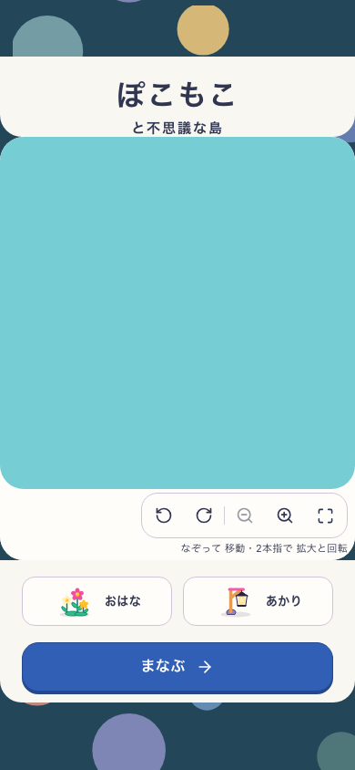
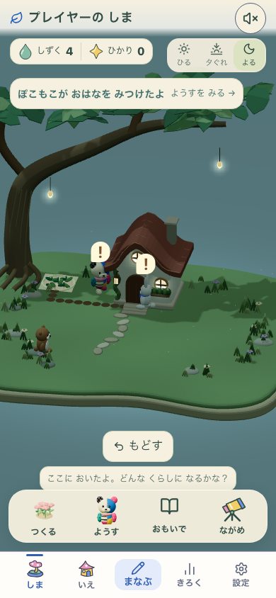
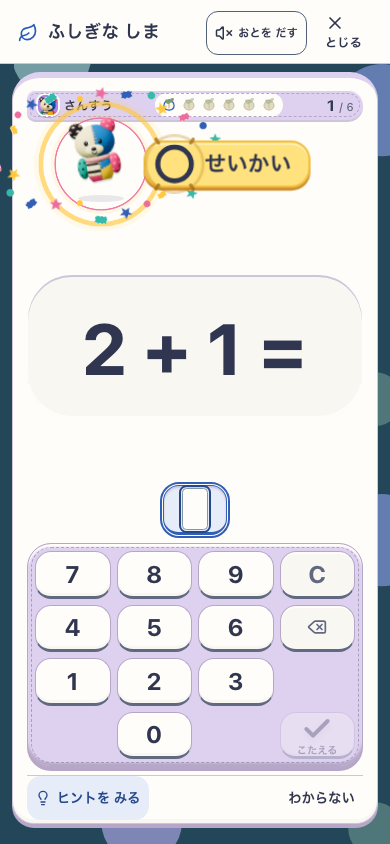
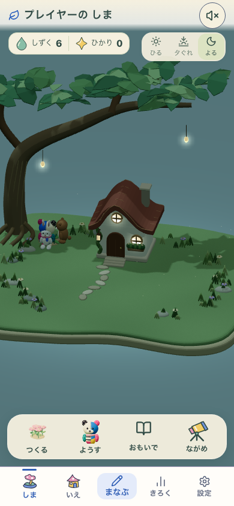
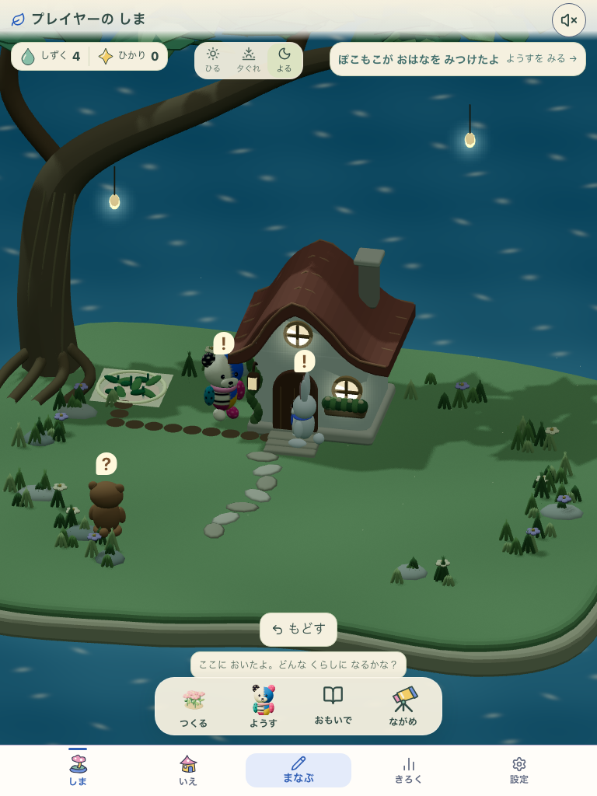

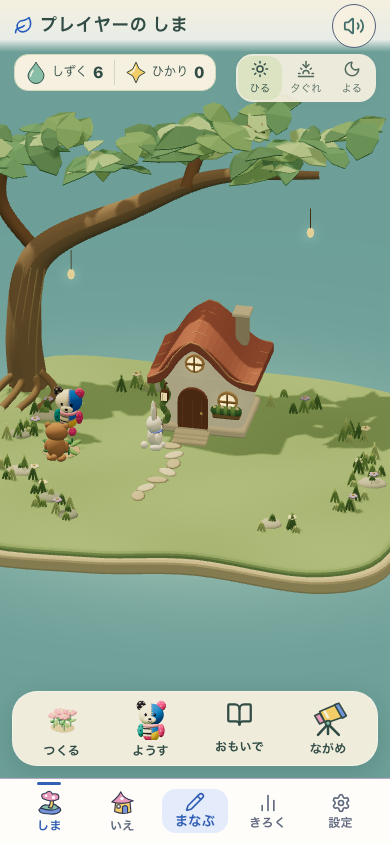
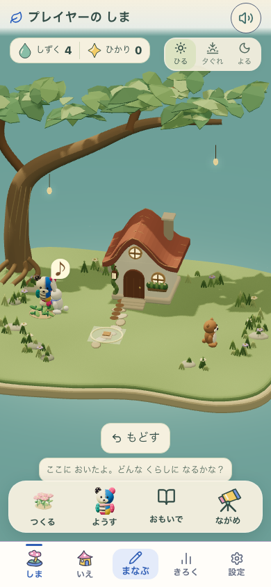
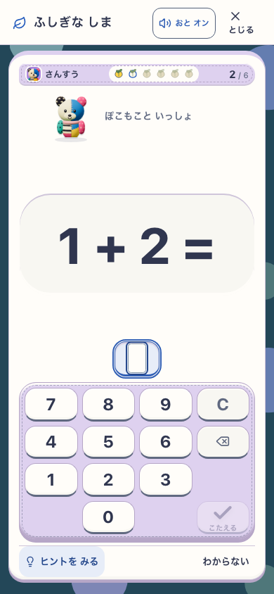

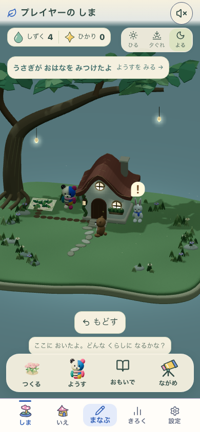
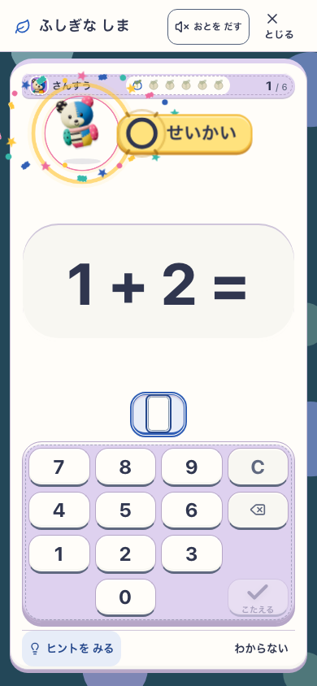
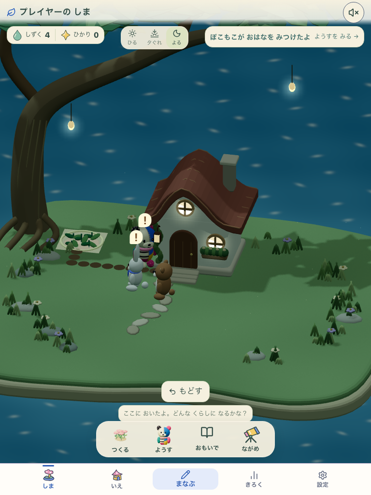
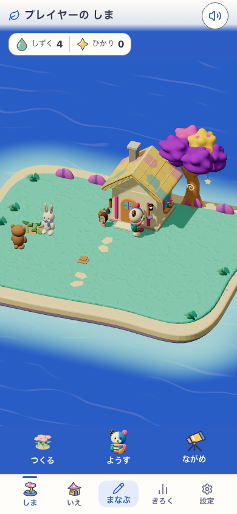
合成creditを使用。実機性能の合格・初期状態の見本として扱いません。
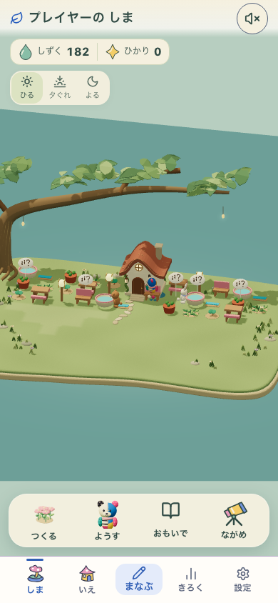
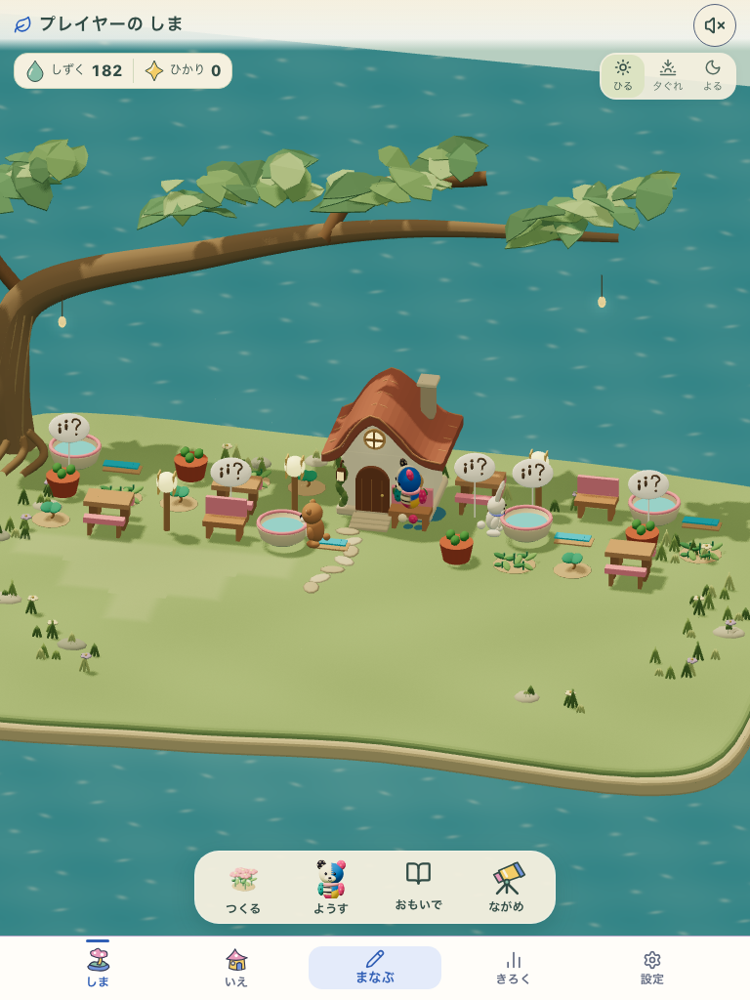